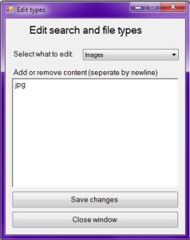

Example of adding file extensions
Example of adding file extensions
Adding filetypes and file extensions is almost identical to adding search types, the only difference being that these are stored in seperate files where the filename is the name of the search type.
To add definitions, types or extensions, just select the search type from the dropdown and seperate each entry in the textbox by newline. When you have added all the wanted entries, just press "Save changes". If you want to remove an entry, just delete that line, and press "Save changes".
<Current version 1.0.0.0>